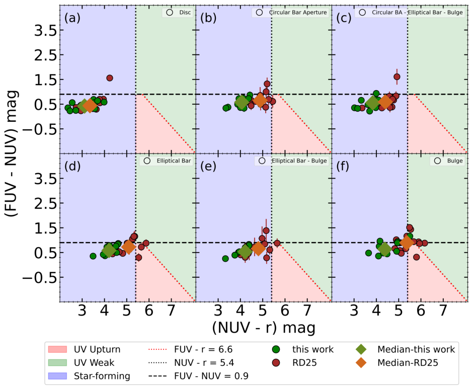
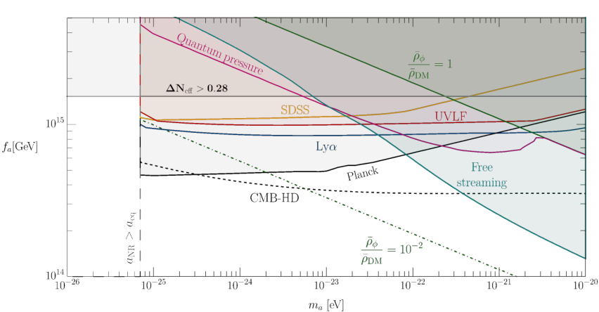

Galaxies
We investigate the stellar population properties of pseudo-bulges in barred galaxies drawn from the Sloan Digital Sky Survey (SDSS DR7) to assess how bars regulate central star formation and secular evolution.…
Recent preprints in astrophysics and cosmology shed light on the complex interplay of galactic evolution, dark matter models, and gravitational lensing effects. Notably, studies on galaxies highlight the role of bars in regulating star formation and quenching processes across cosmic time. In contrast, investigations into dark matter focus on exotic scenarios such as inelastic self-interacting dark matter and global cosmic strings, with implications for large-scale structure formation and observational signatures.
The reviewed preprints do not contain contributions specifically focused on galaxy clusters. This suggests that recent research efforts may be more concentrated on individual galaxies and their internal dynamics rather than larger structures at this time.
No papers in today's selection for this topic.
Recent studies emphasize the role of bars in regulating star formation across different evolutionary stages of spiral galaxies. The bar-driven quenching mechanisms, as explored through spectral indices and spatially-resolved imaging data, reveal a bimodality in stellar populations characterized by young, actively growing pseudo-bulges and older, quenched systems (Age bimodality in pseudo-bulges). Additionally, machine learning algorithms applied to simulated galaxies from the TNG100 model highlight that star formation is primarily a local process driven by local stellar mass surface density, whereas quenching mechanisms are more influenced by global properties such as black hole masses and halo environments (Understanding the regulation of star formation within TNG100).
We investigate the stellar population properties of pseudo-bulges in barred galaxies drawn from the Sloan Digital Sky Survey (SDSS DR7) to assess how bars regulate central star formation and secular evolution.…

Bars play an integral role in regulating star formation (SF) in spiral galaxies, from triggering central starbursts to driving quenching. The diverse SF morphologies observed in local barred galaxies reflect different evolutionary stages of the bar, motivating studies across these stages.…
We apply Random Forest and XGBoost machine learning algorithms to determine which galaxy properties most effectively predict star formation and quenching in simulated galaxies.…
No recent preprints specifically address gravitational lensing in this batch. This gap suggests that current research may be focusing on other aspects of cosmology and galaxy evolution.
No papers in today's selection for this topic.
Recent studies explore unconventional models for dark matter, particularly focusing on the effects of inelastic self-interactions and global cosmic strings. The paper on inelastic self-interacting dark matter examines how exothermic conversion processes can suppress small-scale structure formation through pressure support and produce observable acoustic oscillations in the matter power spectrum (Cosmology of Inelastic Self-Interacting Dark Matter). Meanwhile, research on echoes from global cosmic strings highlights potential observational signatures for these hypothetical structures, including Nambu-Goldstone bosons that could contribute to dark matter or dark radiation, with implications derived from various cosmological probes such as the CMB and large-scale structure surveys (Echoes of Global Cosmic Strings).

If the Universe underwent a cosmic phase transition, it may have left behind a network of cosmic strings. When these strings arise from the breaking of a gauge symmetry, their decay produces a significant stochastic background of gravitational waves.…
We study the linear cosmological evolution of inelastic self-interacting dark matter in a two-component dark sector with a small mass splitting, assuming thermal initial conditions for the two species.…